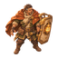
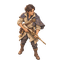
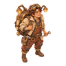

六人战斗造型 / 推荐武器
保留确认的绘画风格，补齐灯卫、巡迹者、织星匠与刺客。下方为静态单朝向资产，不代表四向动画或 Godot 换装已完成。
界面预览 ↗ · 武器搭配与挂点说明 · 提示词 / 输出追踪
岩灯 · 灯卫
环刃 / 灯盾为职业道具
配件方向：近卫贴身 / 远弧开路
96 px
64 px灰度检查 逐隼 · 巡迹者
星辉弹 / 长镜星枪
配件方向：贯星穿透 / 回响跳弹
96 px
64 px灰度检查 砾砂 · 织星匠
锚灯炮台 / 双工作灯不攻击
配件方向：急速短时 / 长焦覆盖

96 px64 px灰度检查霁月 · 星图师
星辉弹 / 星盘用于标记
配件方向：贯星列队 / 回响清场
螺灯 · R-07
锚灯炮台 / 胸灯反馈护盾
配件方向：长焦拉扯 / 急速守点
墨刃 · 潜星者
环刃 / 双月刃为武器呈现
配件方向：近卫爆发 / 远弧撤离
96 px64 px灰度检查
正式制作仍需拆分身体/手持武器图层、移动/攻击/受击/死亡动画。当前巡迹者长枪与刺客双刃仍烘焙在静态姿态中，换装时须更换或拆分持握层；盾、星盘、工作灯不额外制造伤害。